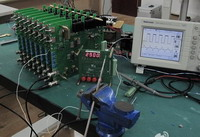

高速直流风洞 Supersonic wind tunnel
- 20cm by 20cm test section, Mach 2 maximum
- in use from Oct. 2012
|
Supersonic wind tunnel 2012-9-21 |
低速直流低湍流度风洞 Low speed wind tunnel
- 30cm by 30cm test section, maximum velocity 30m/s
- 0.5% turbulence intensity
- in use from Oct. 2010
|
Low speed wind tunnel 2011-7-1 |
低速射流实验台 Low speed jet facilities
- 1cm and 4cm jet heights, aspect ratio 25, maximum velocity 40m/s
- in use from March 2011
|
1cm jet facility in experiments |
低速水流实验平台 Low speed water tunnel
- 20cm x 40cm x 60cm test section, 6:1 contraction ratio, maximum velocity 0.2m/s
- expected to be in use from Feb 2012
|
Water tunnel waiting to be assembled 2011-12-28 |
下吹式风洞 Low speed blow down tunnel
- 30cm by 30cm test section, maximum velocity 30m/s
- in use from Jan. 2012
|
Blow down tunnel 2012-9-1 |
低速大型直流式风洞 Low speed blow down tunnel
- 120cm by 180cm test section, maximum velocity 10m/s
- in use from Jan. 2013
|
Wind tunnel 2012-7-1 |
4通道热线风速仪，三维坐标架
- 4 channel hotwire anemometry system built by NUAA (Nanjing Univ. Aero. & Astro.)
- single and x wires, capable of measurements up to Mach 1.2
- in use from May 2011
- 16-channel in-house system to be in use from March 2012
|
 In-house multi-channel anemometer in test 2011-12-30 |
3维PIV系统
- Lavision particle image velocimetry system, steoroscopic,100mJ laser
- expected to be in use from March 2012
|
PIV system and water tunnel 2012-8-1 |
激光位移传感器 laser displacement sensor
- Keyence system, dual head, in use from Sept 2010
|
Laser displacement sensors |
红外点测温装置及黑体标定系统
- Raytek infrared thermometer, CEM blackbody calibrator, in use from Sept 2010
|
|
32通道平均压强及脉动压强扫描测量设备
- In-house 32-channel average and fluctuating pressure measurement system, equivalent to a scanivalve system and kulite sensors, expected to be in use from March 2012
|
|


{kind=link}
{kind=link}
{kind=link}
{kind=link}
{kind=link}
{kind=link}
{kind=link}
{kind=link}
{kind=link}
{kind=link}
{kind=link}